Sword Art Online Volume 12 - Alicization Rising
Sinopsis
Cardinal continúa la historia de Quinella después de que ella encontró la lista de comandos del sistema y se convirtió en administradora. Después Cardinal advierte a Kirito que las criaturas del territorio oscuro están a punto de invadir el Mundo Humano y sacrificar a todos sus residentes. Cardinal hace un trato con Kirito para que este la ayude a derrotar a Quinella y luego le enseña a Kirito y Eugeo cómo utilizar el arte de control total de armamento. Los dos jóvenes comienzan su búsqueda para recuperar sus armas y llegar a la parte superior de la Catedral Central.
Ilustraciones
Las siguientes son las ilustraciones que se incluyen en el volumen 12:
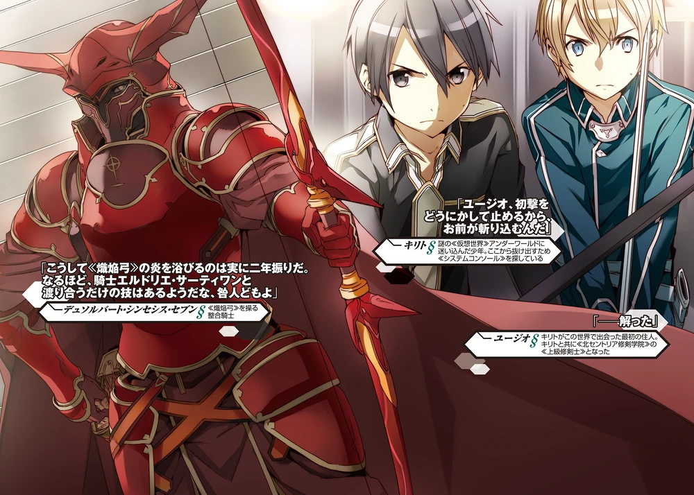
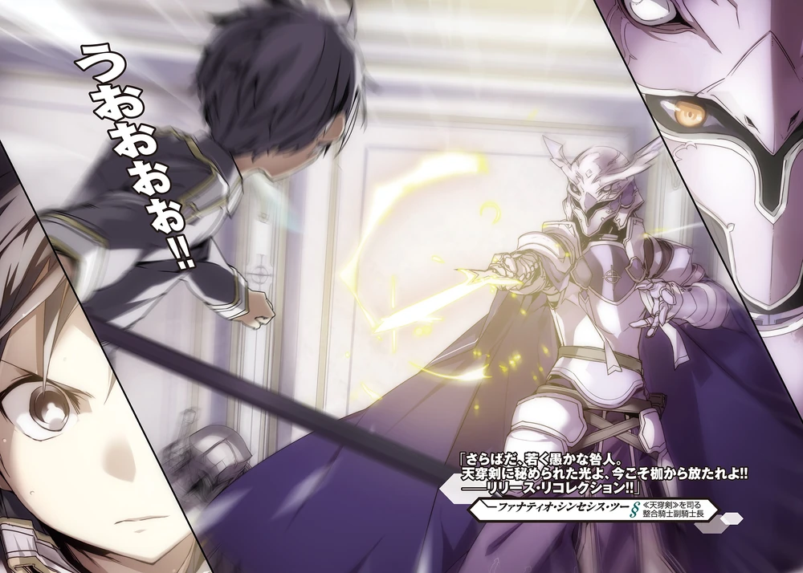
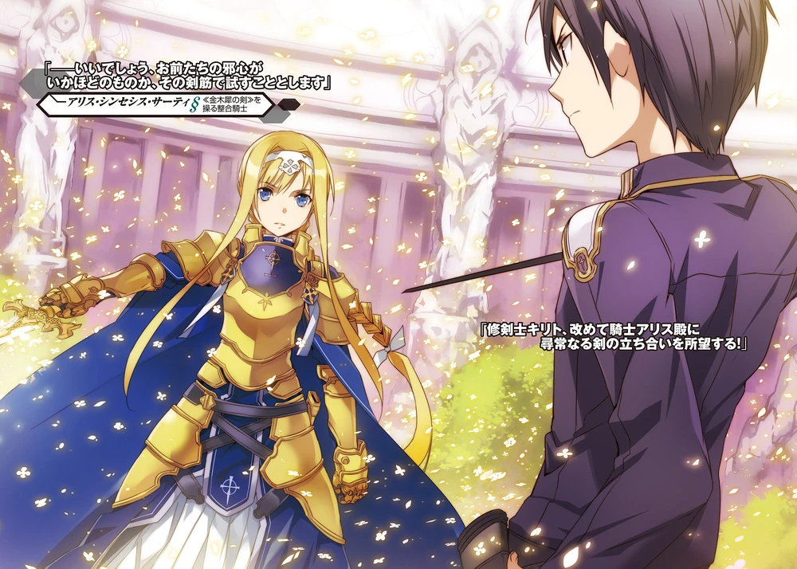
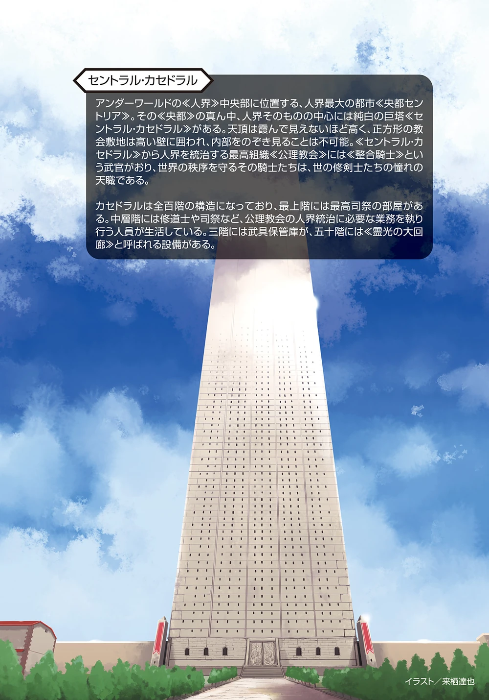
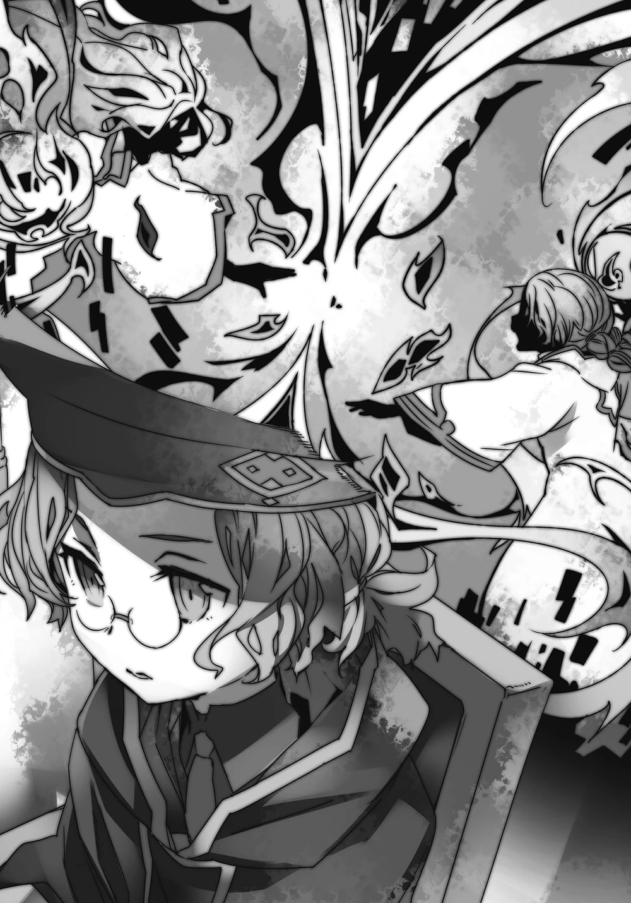
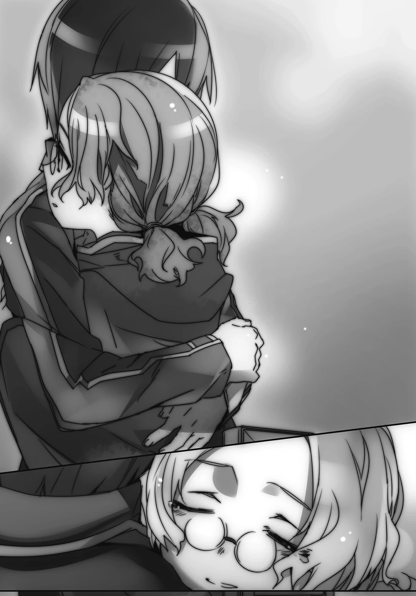
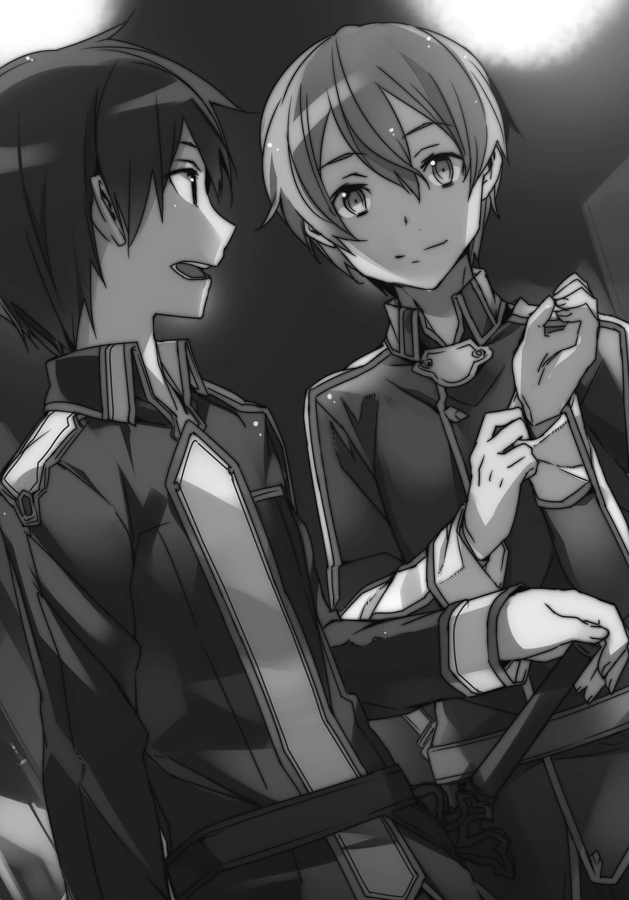
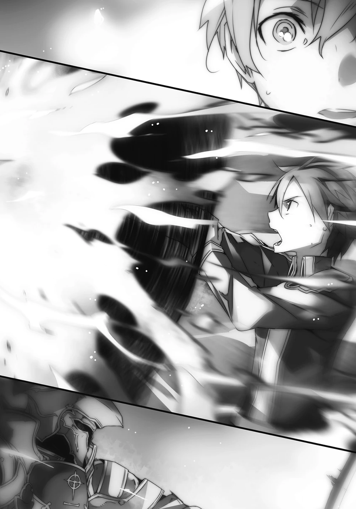
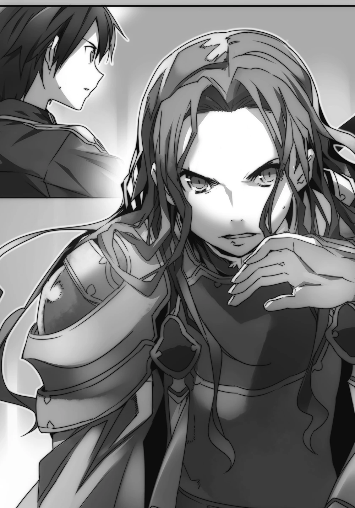
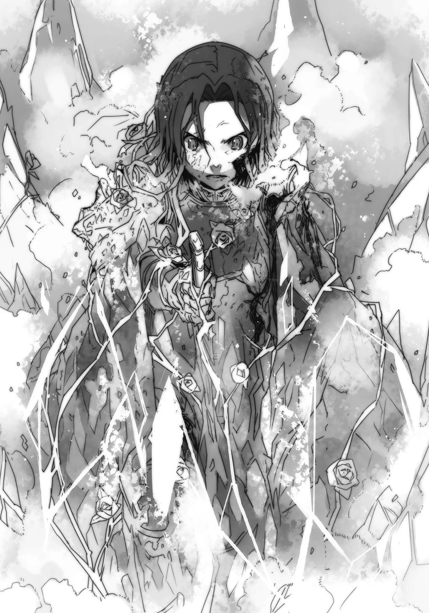
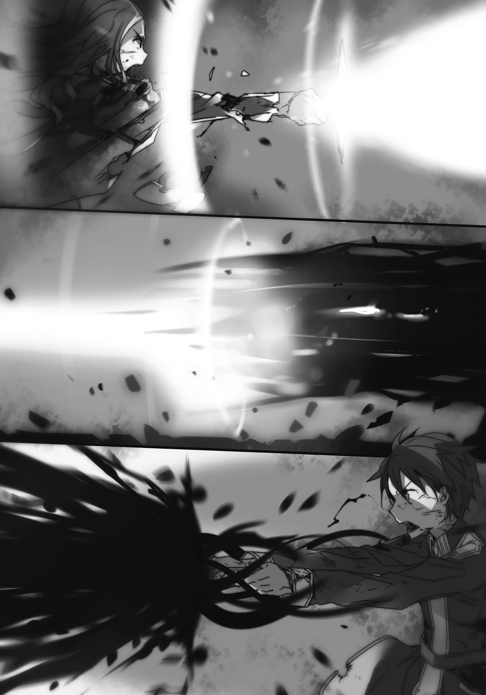
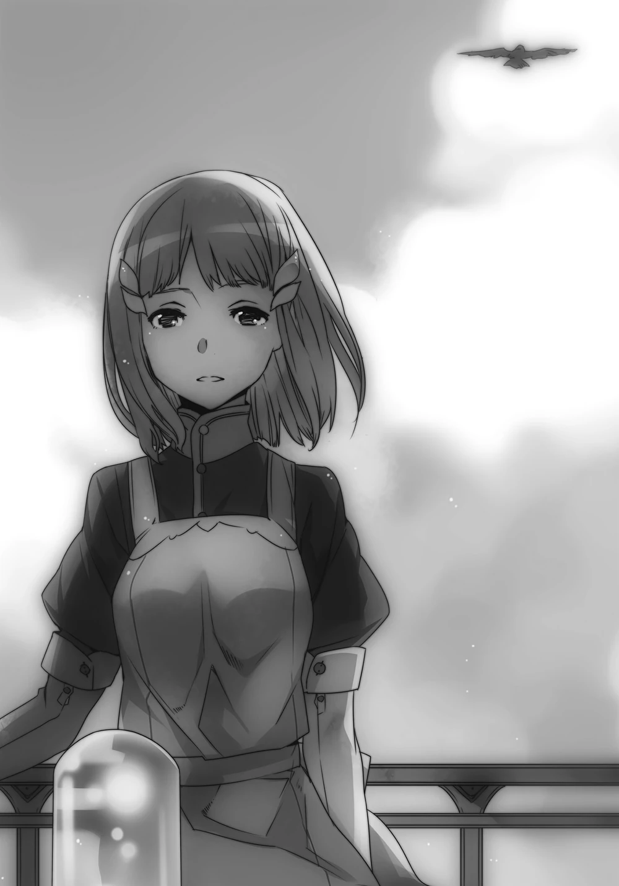
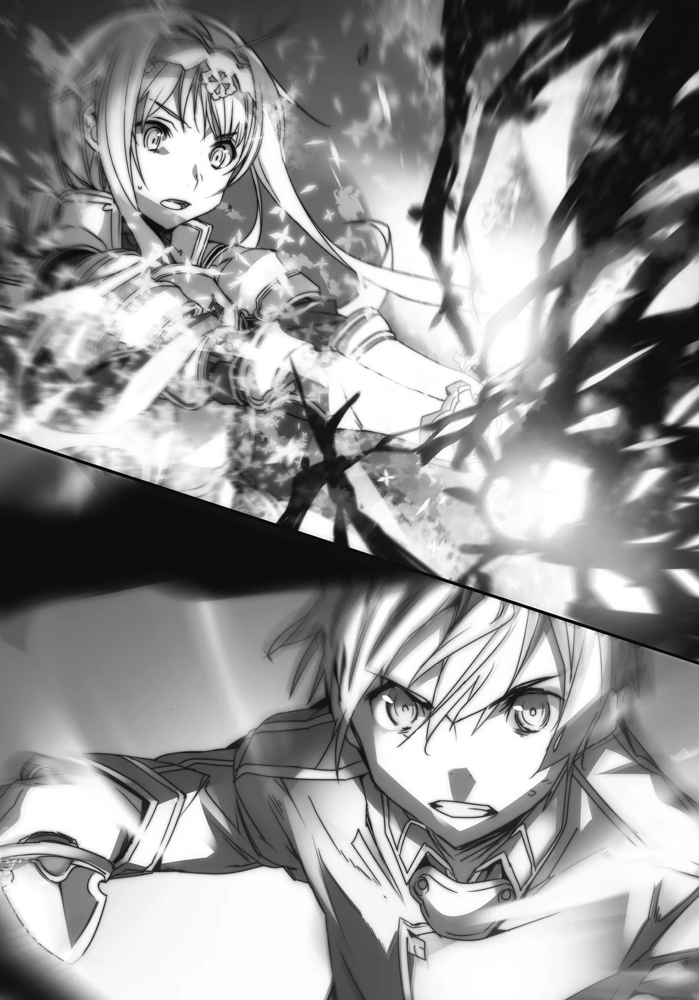